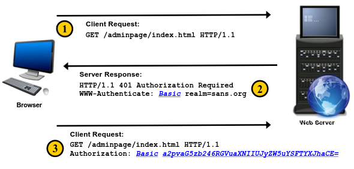

Basic Authentication
Basic Authentication was one of the first forms of
authentication for the web. It was defined in RFC 2617 (Originally defined in RFC 1945) and has a number of
problems. First and foremost, the username and password are transmitted over the network using a simple Base64
encoding, which is trivial to reverse
Encode in Base641. Takes each 3-byte chunk
and converts it to four printable ASCII characters using character set of 10 numbers, 26 lowercase, 26 uppercase, +,
and /
◇ 10 + 26 + 26 + 2 = 64
2. Pads to 3 bytes using = sign
HTTP ”Basic"
Authentication process1. Client requests a page.
2. The server sends back a 401 status code,
which indicates that the client needs to authenticate.
3. The client sends the request again for the page but
this time includes the authentication information input by the user. The username and password are encoded using
Base64 (not encrypted)
Attacker's Perspective of HTTP Basic
Authentication• Basic Authentication has NO concept of:
◇ Account lockout
◇ Maximum
number of login attempts
• Plaintext authentication, easily sniffable if not passed via HTTPS
• Can easily
be replayed
• Impersonating the website to dupe browsers into providing authentication credentials
• No
logout functionality without closing the browser